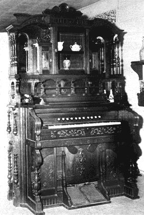

Above: Don Melvin points out the innards of one of the organs he has rebuilt. Note the cane and rush-bottomed chairs in the background and the round oak table the Melvins found in a dump. Impression from simple but effective rubber stamp that boosted the Melvin home enterprises.